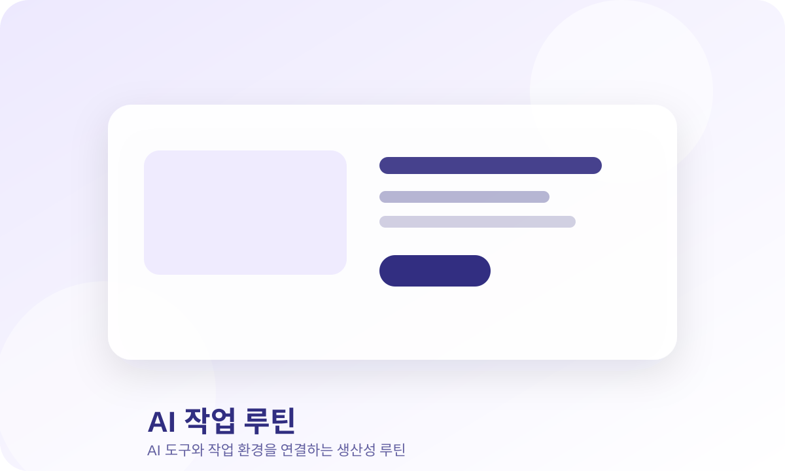

ChatGPT로 업무 시간을 줄이는 5단계 루틴

ChatGPT는 질문을 잘 던질수록 업무 시간을 줄여주는 도구가 됩니다. 중요한 것은 매번 새로 묻는 것이 아니라, 반복 업무별 프롬프트 흐름을 만들어두는 것입니다.
핵심 정리
이 글은 단순한 상품 나열이 아니라, 어떤 문제를 해결하기 위해 어떤 조합이 필요한지 판단할 수 있도록 정리했습니다.
업무 자동화 루틴
- 반복되는 업무를 3가지로 나눕니다.
- 각 업무의 입력 자료와 원하는 결과물을 정리합니다.
- 자주 쓰는 프롬프트를 저장합니다.
- 초안 생성 후 직접 검수합니다.
- 좋은 결과물은 템플릿으로 남깁니다.
추천 아이템 조합
선택 기준 비교
| 구분 | 먼저 볼 기준 | 주의할 점 |
|---|---|---|
| 입문 | 지금 가장 불편한 문제 1개 | 한 번에 많이 사지 않기 |
| 확장 | 반복 사용 빈도 | 디자인보다 실제 사용 위치 확인 |
| 유지 | 정리와 보관이 쉬운지 | 관리하기 어려우면 다시 방치됨 |
자주 실패하는 패턴
- AI에게 한 번에 완성본을 기대한다.
- 검수 기준 없이 결과물을 복사한다.
- 좋았던 프롬프트를 저장하지 않는다.
구매 전 확인할 질문
- 내가 해결하려는 문제가 이 조합과 직접 연결되는가?
- 이미 갖고 있는 물건으로 먼저 대체할 수 있는가?
- 한 번에 많이 사기보다 가장 필요한 1개부터 시작할 수 있는가?
이 페이지에는 제휴 링크가 포함될 수 있으며, 구매 시 일정액의 수수료를 제공받을 수 있습니다.